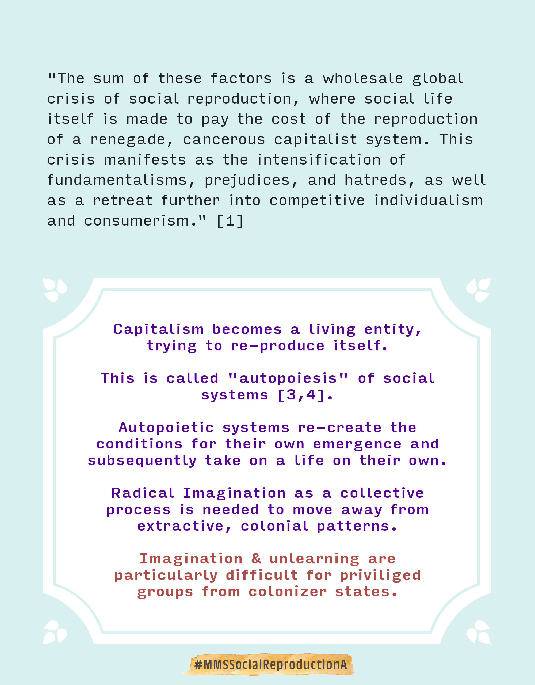
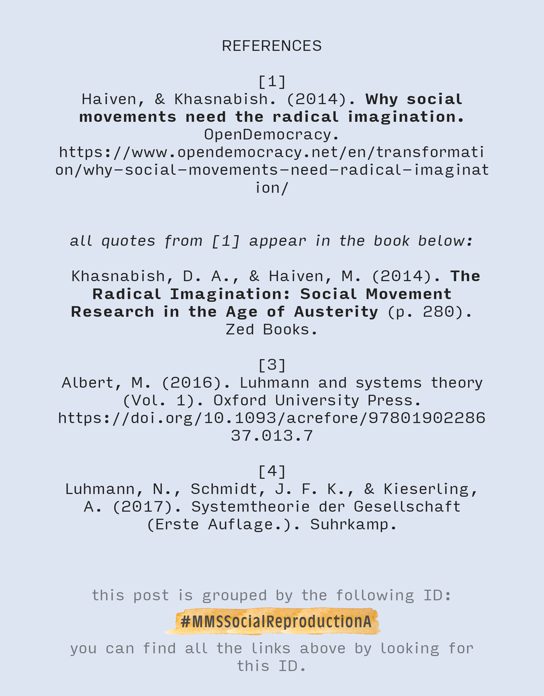
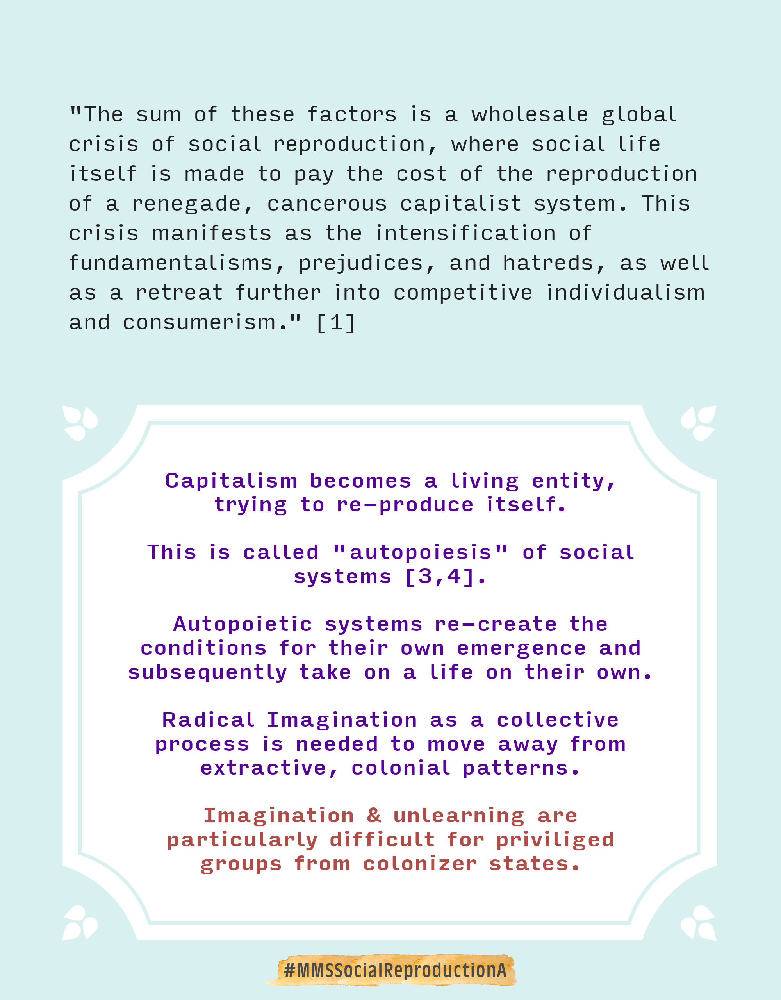
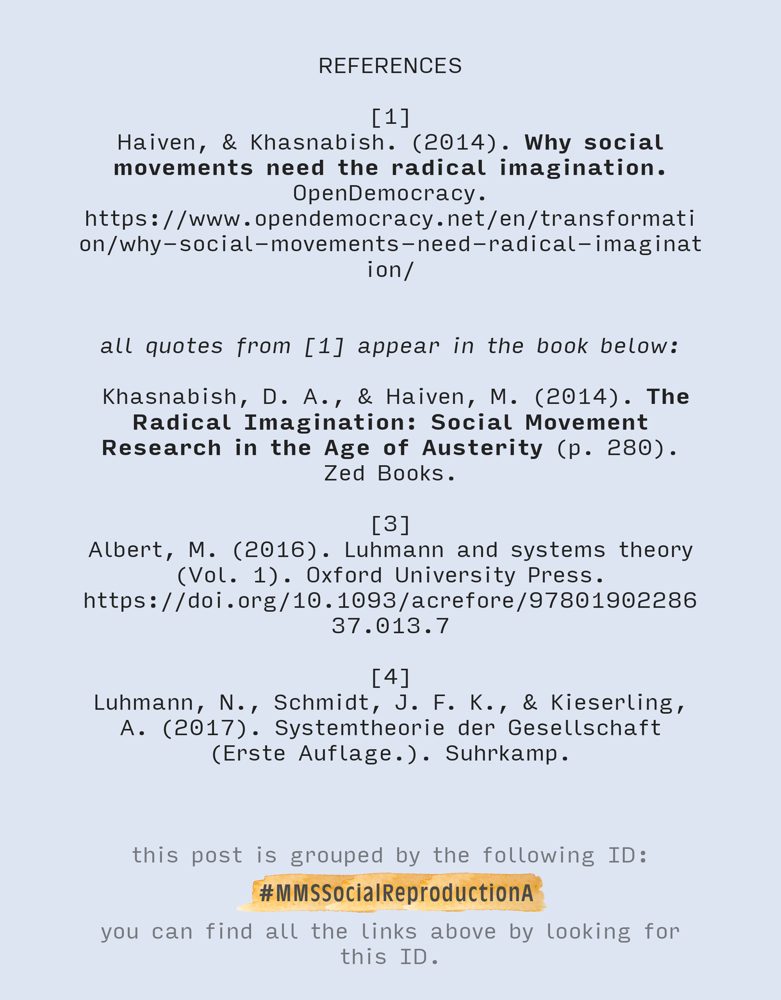

What environments aid the emergence of a regenerative future?

The system's capacity to be conducive to health & wellbeing is re-created in the systems that emerge from it. This is the autopoietic (self-reproducing) effect of social systems. As these systems are self-referential, the new structures they create carry the embedded values, beliefs, purpose etc.
Read More 


